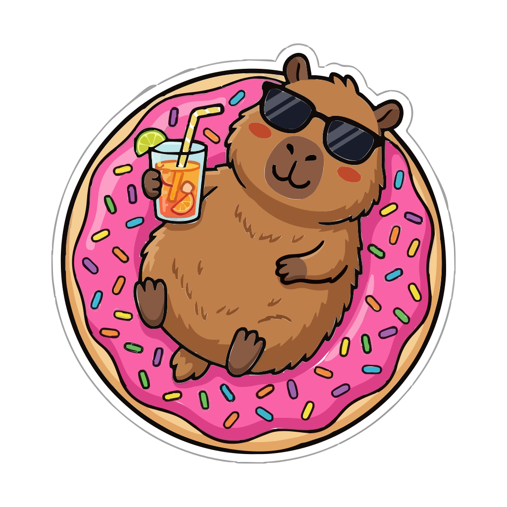

Encouragement first.
Gentle reminders, clear progress, and a little company for your everyday routine.
A calmer kind of self-care
Brownie Water Tracker began with a simple idea: taking care of yourself should feel encouraging.

Brownie · Your everyday hydration companionOur little philosophy
Some days you’re on top of everything. Other days, drinking a glass of water is a win in itself.
Brownie makes space for both. Log your drinks, find your own rhythm, and enjoy a friendly face along the way.
We chose a capybara for a reason: calm, sociable, and right at home in the water. Brownie brings that easygoing spirit to a habit you return to every day.
What matters to us
A few principles behind every part of Brownie.
Gentle reminders, clear progress, and a little company for your everyday routine.
Start as a guest. Choose whether to back up your logs. Stay in control of your data.
The core app is free, and the source is available on GitHub under the MIT License.
Made in the open
Explore how Brownie is built, report a bug, or bring an idea to the project.
Built with Expo and React Native for mobile, with optional account backup and an optional Pro upgrade for more companions.
A little water. A little company.
Your next sip is a good place to start.
Get Brownie for AndroidFree Android beta · No account needed